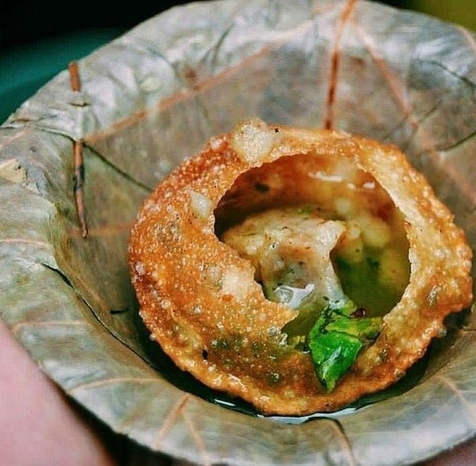

Phuchka

Description
Phuchka is a way of life in Calcutta. Everyone has their favourite
phuchkawala (phuchka seller). Every para (neighbourhood) must have at
least a few phuchkawalas who set up their stalls around four in the
afternoon everyday. They bring their already fried phuchka papri or
puris in huge bags and arrange them neatly in a huge wicker basket or
a glass box. Then they start preparing their mis en place and mixing
the tawk jol (sour water). By the time they are done, customers
start gathering around them and the day’s business starts.
Ingredients
For the Papri
- 200 g atta
- 100 g sooji (semolina)
- ¼ tsp papad khar
- ¼ tsp baking powder
- 170 ml water
For the tamarind water
- Vegetable oil for deep frying
- 30 g lime juice
- 25 g tamarind pulp
- ¼ tsp garam masala
- 3 g black salt (beetnoon)
- 3 g salt
- 400 ml drinking water
For the potato filling
- 300 g boiled potatoes
- 4 g salt
- 4 g garam masala
- 1 tsp chaat masala
- ½ tsp coriander powder
- 7 g crushed green chillies
- 10 g coriander leaves
- 50 g of phuchka water
- 30 g boiled motor
- Chopped Onions(Optional)
Method
Make the papri
- In a large bowl mix together atta, sooji, papad khar, and
baking powder. Add water and start kneading it into a stiff
dough. Wrap in a plastic wrap or place in an airtight bowl
to rest it for one hour.
- After an hour divide the dough small portions (7 g each if you
like large papri, and 5 g if you want a small ones).
- Roll each tiny ball of dough between your palms until they are
round and have a smooth outer surface. Roll them out one by
one into discs of uniform thickness—about 7 centimetre in
diameter when using a 7 gram portion of dough.
- As you roll the papris, leave them out to dry for some time.
In a cool room without a fan running it takes up to two hours.
But don't go by time. The surface of the papris should dry out
but they should not turn stiff. Flip them when one side looks
dry.
- Now, heat oil in a kadhai or wok for deep frying. The oil
has to be very hot—above 200ºC.
- Add a papri and press down with a jhajhri or perforated spoon.
Within a few seconds it should puff and rise to the surface.
Continue to fry it, basting it with hot oil or turning it over
until it is brown. Take it out of the oil and place on a jhuri
or colander so that the steam can escape and the papris remain
crisp.
- The papris won't be very crispy right off the oil. Phuchka
makers usually leave them out in the hot sun to dry and crisp up.
During monsoons they use a high power incadescent light bulb to dry them.
You can fry them in the evening and dry them in the sun next morning.
As an alternative, dry them in an oven at the lowest temperature setting
until crisp. Please keep an eye on them as. Papris burn easily! Also,
if making ahead, crisp the papris on the day you are planning to serve
them.
Make the tamarind water
- Soak tamarind in warm water mash it well to extract the pulp.
- Add lime juice or a mix of lime and gondoharaj lime juice,
black salt, regular table salt, garam masala and drinking water.
You can also add some chopped coriander leaves if you want.
- Taste the water and adjust sourness and salt to your liking.
You can leave the lime peels in the water for flavour.
Make the potato filling
- Peel and roughly mash boiled potatoes.
- Season them with salt, garam masala, chaat masala, coriander
powder, crushed green chillies, coriander leaves, and 50 ml
of the tamaring water we just prepared.
- Mix everything together. Taste for seasoning and adjust it to
your taste. Finally add boiled yellow peas (motor) and soaked
Bengal gram. Mix gently and you are ready to serve phuchkas.